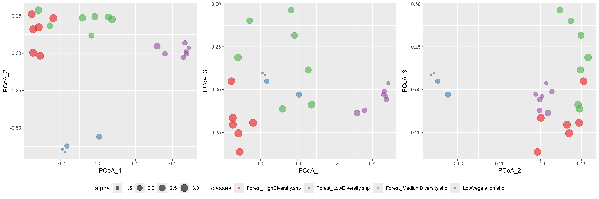
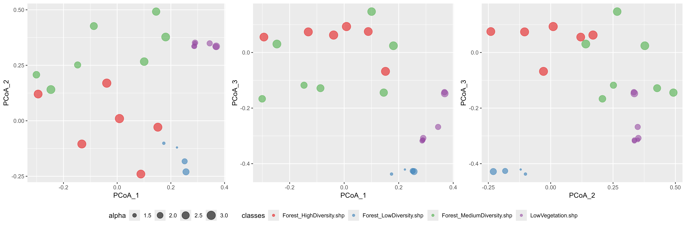

vignettes/biodivMapR_04.Rmd
biodivMapR_04.RmdThis tutorial illustrates how to perform validation of spectral diversity metrics based on ground information. Ground information should be associated with a vector layer including polygons. The size of the polygons is important, as it should be compatible with ground information.
biodivMapR does not aim at producing diversity metrics with
absolute accuracy:
the spectral diversity metrics produced with biodivMapR are
not expected to match the absolute value of diversity metrics. Hence,
when performing validation of diversity metrics with ground
observations, users should favor correlation analyses, rather than using
metrics such as RMSE between biodiversity indices measured from
inventories and diversity metrics produced withbiodivMapR
.
The choice of the number of clusters is an important factor directly influencing the range of the spectral diversity metrics, higher number of clusters leading to higher maximum potential values of spectral richness & Shannon index.
The function biodivMapR_opt_clusters can be used to
identify the number of clusters maximizing the correlation between
spectral diversity metrics and observations.
Ground information should not correspond to individual
points:biodivMapR produces diversity metrics based on information
extracted from a group of pixels.
and
spectral diversity metrics are computed from the distribution of cluster
populations is each polygon. Therefore we recommend that each polygon
defining an validation plots should correspond to at least 25-50 pixels
of the image.
This code computes and spectral diversity metrics over the footprint defined by polygons of a vector layer.
biodivMapR using spectral features
obtained from SPCA
The validation can be performed using the biodivMapR
spectral diversity models adjusted on SPCA. The following code
illustrates how to proceed, based on results obtained from previous
tutorials.
library(ggplot2)
library(RColorBrewer)
library(gridExtra)
# 1- list vector files corresponding to groups of validation plots
listShp <- as.list(list.files(path = output_dir_val,
pattern = '.shp', full.names = T))
# 2- A SpatVectorCollection is created as validation plots correspond to multiple files
samplesVal <- lapply(listShp, terra::vect)
validation_vect <- terra::svc(samplesVal)
# 3- define SpatRaster for the SPCA raster stack and corresponding mask
SPCA_rast <- terra::rast(PCA_Output$PCA_Files$PCA)
mask_rast <- terra::rast(mask_path_PCA)
# 4- perform validation over the footprint of each polygon
validation <- get_diversity_from_plots(input_rast = SPCA_rast,
selected_bands = selectedPC,
input_mask = mask_rast,
validation_vect = validation_vect,
Kmeans_info = ab_info_SPCA$Kmeans_info,
Beta_info = ab_info_SPCA$Beta_info)
# 5- produce scatterplot using PCoA computed only from plots
filename <- file.path(output_dir_PCA2,'BetaDiversity_Plots.png')
scatter_alphabeta(alpha = validation$specdiv$shannon_mean,
PCoA_1 = validation$specdiv$BetaPlots_PCoA_1,
PCoA_2 = validation$specdiv$BetaPlots_PCoA_2,
PCoA_3 = validation$specdiv$BetaPlots_PCoA_3,
classes = validation$specdiv$source,
filename = filename)
# produce scatterplot using PCoA computed from elements sampled across the full image
filename <- file.path(output_dir_PCA2,'BetaDiversity_Full.png')
scatter_alphabeta(alpha = validation$specdiv$shannon_mean,
PCoA_1 = validation$specdiv$BetaFull_PCoA_1,
PCoA_2 = validation$specdiv$BetaFull_PCoA_2,
PCoA_3 = validation$specdiv$BetaFull_PCoA_3,
classes = validation$specdiv$source,
filename = filename)The figures below illustrates the dissimilarity among ground plots provided as vector layers. The Bray-Curtis dissimilarity matrix was first computed among all plots. A Principal Coordinate Analysis (PCoA) was then performed on this BC dissimilarity matrix in order to transpose it in a 3D space.

The adjustment of PCoA on the ground plots only tends to emphasize
the dissimilarity among plots. The second figure based on
BetaFull information instead of BetaPlots uses
the PCoA space adjusted based on the sampling used to produce the beta
diversity maps. The significantly larger amount of data tends to reduce
the potential dissimilarity highlighted when focusing on a subset of
plots.

biodivMapR using spectral indices
The validation can also be performed using the
biodivMapR spectral diversity models adjusted on spectral
indices. The following code illustrates how to proceed, based on results
obtained from previous tutorials.
library(ggplot2)
library(RColorBrewer)
library(gridExtra)
# 1- list vector files corresponding to groups of validation plots
listShp <- as.list(list.files(path = output_dir_val,
pattern = '.shp', full.names = T))
# 2- A SpatVectorCollection is created as validation plots correspond to multiple files
samplesVal <- lapply(listShp, terra::vect)
validation_vect <- terra::svc(samplesVal)
# 3- define SpatRaster for the set of spectral indices and corresponding mask
SI_rast <- lapply(SI_path,terra::rast)
mask_rast <- terra::rast(mask_path_SI)
# 4- perform validation over the footprint of each polygon
validation <- get_diversity_from_plots(input_rast = SI_rast,
validation_vect = validation_vect,
input_mask = mask_rast,
Kmeans_info = ab_info_SI$Kmeans_info,
Beta_info = ab_info_SI$Beta_info)
# 5- produce scatterplot using PCoA computed only from plots
filename <- file.path(output_dir_SI2,'BetaDiversity_Plots.png')
scatter_alphabeta(alpha = validation$specdiv$shannon_mean,
PCoA_1 = validation$specdiv$BetaPlots_PCoA_1,
PCoA_2 = validation$specdiv$BetaPlots_PCoA_2,
PCoA_3 = validation$specdiv$BetaPlots_PCoA_3,
classes = validation$specdiv$source,
filename = filename)
# produce scatterplot using PCoA computed from elements sampled across the full image
filename <- file.path(output_dir_SI2,'BetaDiversity_Full.png')
scatter_alphabeta(alpha = validation$specdiv$shannon_mean,
PCoA_1 = validation$specdiv$BetaFull_PCoA_1,
PCoA_2 = validation$specdiv$BetaFull_PCoA_2,
PCoA_3 = validation$specdiv$BetaFull_PCoA_3,
classes = validation$specdiv$source,
filename = filename)The figures below illustrates the dissimilarity among ground plots provided as vector layers. The Bray-Curtis dissimilarity matrix was first computed among all plots. A Principal Coordinate Analysis (PCoA) was then performed on this BC dissimilarity matrix in order to transpose it in a 3D space.
As in the previous example, the adjustment of PCoA on the ground
plots only tends to emphasize the dissimilarity among plots. The second
figure based on BetaFull information instead of
BetaPlots uses the PCoA space adjusted based on the
sampling used to produce the beta diversity maps. The significantly
larger amount of data tends to reduce the potential dissimilarity
highlighted when focusing on a subset of plots.